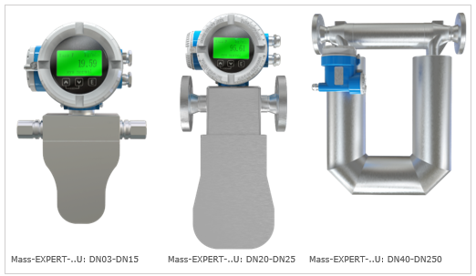
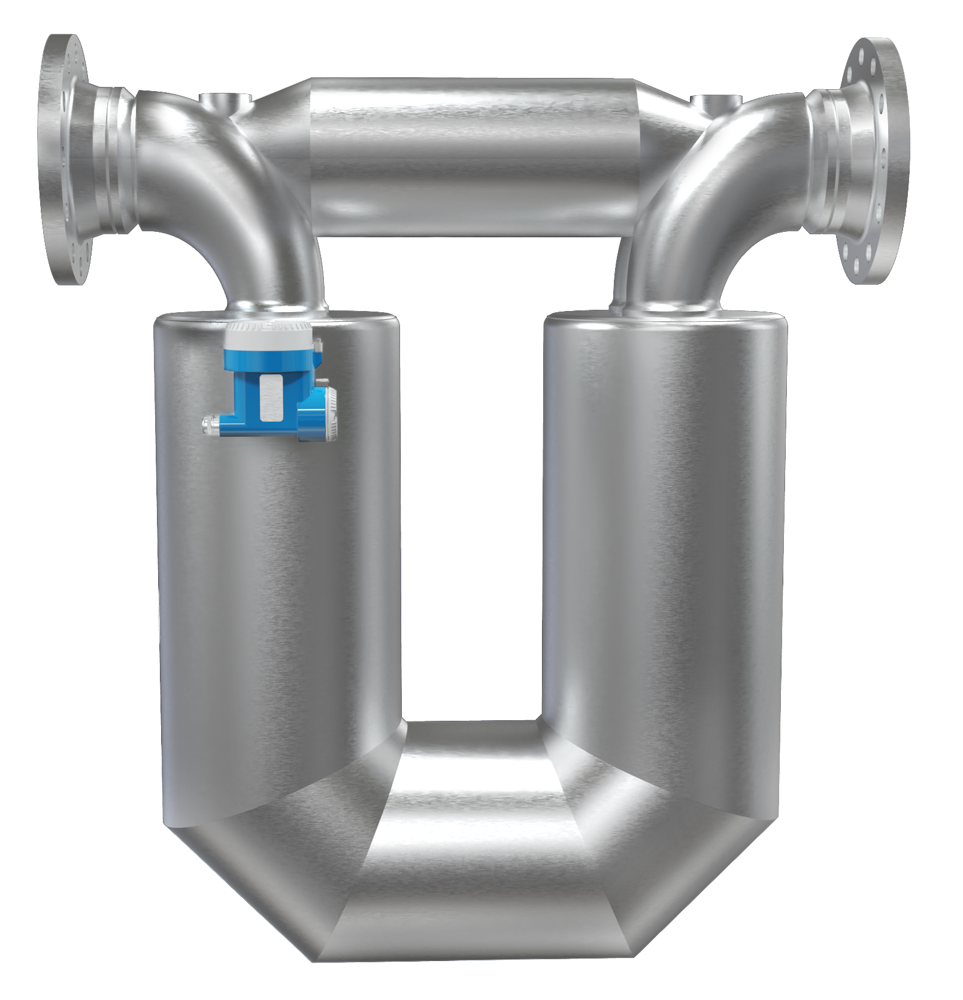
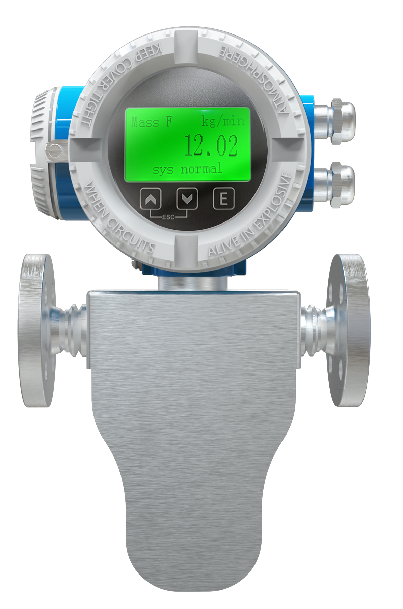

U-образная конструкция — один из наиболее распространённых и проверенных типов сенсоров кориолисовых расходомеров. Две параллельные измерительные трубки, изогнутые в форме буквы «U», обеспечивают высокую чувствительность при компактных габаритах. Рекомендуется для большинства промышленных задач.
U-образная конструкция — один из наиболее распространённых и проверенных типов сенсоров кориолисовых расходомеров. Две измерительные трубки, изогнутые в форме буквы «U», колеблются в противофазе, создавая кориолисову силу, пропорциональную массовому расходу. Эта конфигурация обеспечивает оптимальный баланс чувствительности, компактности и надёжности.

U-образная конструкция рекомендуется для большинства промышленных задач благодаря оптимальному сочетанию чувствительности, компактности, надёжности и универсальности. Подходит для широкого спектра жидкостей и газов.
U-образная конструкция сочетает в себе десятилетия проверенной практики и передовые инженерные решения, обеспечивая непревзойдённую надёжность и точность измерений.
U-образная форма трубок создаёт максимальный кориолисов сдвиг фаз при минимальной длине, обеспечивая высокую чувствительность в компактном корпусе.
Плавный изгиб трубок исключает концентраторы напряжений, что повышает усталостную прочность и ресурс сенсора — срок службы до 20 лет.
Стандартный диапазон 100:1; для оптимизированных модификаций с пониженной рабочей частотой — до 1000:1, что позволяет измерять как минимальные, так и максимальные расходы одним прибором.
Фланцевые (ГОСТ, ANSI, DIN), резьбовые и санитарные (Tri-Clamp) соединения для DN03 и выше. Возможна интеграция в любые трубопроводные системы.
Эффективен для жидкостей любой вязкости, газов, криогенных сред, суспензий, пульп и многофазных потоков. Широкий спектр материалов трубок (316L, Hastelloy, Inconel).
Симметричная конструкция с двумя трубками, колеблющимися в противофазе, эффективно подавляет внешние вибрации и обеспечивает стабильность показаний.
Mass-EXPERT предлагает несколько конфигураций измерительных трубок, каждая из которых оптимизирована под специфические условия эксплуатации
U-образный тип — базовая и наиболее универсальная конфигурация. Другие типы оптимизированы для специфических задач (сверхвысокое давление, криогеника, агрессивные среды и т.д.).
Внешний вид расходомеров Mass-EXPERT с U-образными измерительными трубками различных типоразмеров


Технические характеристики расходомеров Mass-EXPERT с U-образными измерительными трубками
| Параметр | Значение |
|---|---|
| Тип измерительных трубок | U — U-образный |
| Условный диаметр (DN) | от 3 до 250 |
| Динамический диапазон (стандарт) | 100:1 |
| Динамический диапазон (оптимизированный) | до 1000:1 |
| Количество трубок | 2 (две параллельные) |
| Конфигурация | Две U-образные трубки, колебания в противофазе |
| Типы присоединений | Фланцевые (ГОСТ, ANSI, DIN), резьбовые, санитарные (Tri-Clamp) |
| Минимальный DN для фланцевых соединений | DN03 и выше |
| Материал измерительных трубок | Нержавеющая сталь AISI 316L (стандарт); Hastelloy, Inconel (опция) |
| Рабочая частота колебаний | от 80 до 800 Гц (зависит от DN) |
| Температура рабочей среды | от −196 до +350 °C (зависит от исполнения) |
| Максимальное рабочее давление | до 96 МПа (зависит от исполнения) |
| Выходные сигналы | 4–20 мА (HART), RS-485 (Modbus RTU), Profibus PA, CAN, импульсный, частотный, дискретный |
| Взрывозащита | Ex d ib IIC T6 Gb; Ex db ia IIC T6 Gb; Ex tb ia IIIC T80°C Db |
U-образный тип — универсальное решение для большинства задач промышленности
| Параметр | U | K | W | L | Δ (Delta) |
|---|---|---|---|---|---|
| Чувствительность | Высокая | Высокая | Средняя | Высокая | Очень высокая |
| Компактность | Высокая | Средняя | Высокая | Средняя | Средняя |
| Высокое давление | Средняя | Высокая | Очень высокая | Высокая | Средняя |
| Агрессивные среды | Хорошая | Хорошая | Хорошая | Отличная | Хорошая |
| Динамический диапазон | 100:1 (1000:1*) | 100:1 | 50:1 | 100:1 | 100:1 |
| DN диапазон | 03–250 | 03–050 | 01–015 | 01–015 | 03–080 |
| Санитарные соединения | Да | Да | Да | Да | Нет |
| Рекомендация | Для большинства задач | Высокое давление | Сверхвысокое давление | Агрессивные среды | Максимальная точность |
* Динамический диапазон до 1000:1 — для оптимизированных модификаций U-образного типа с пониженной рабочей частотой.
U-образный тип сенсора Mass-EXPERT подходит для большинства промышленных задач благодаря универсальности и высокой чувствительности.
Вернуться к основному каталогу продукции Mass-EXPERT или посмотреть другие типы измерительных трубок